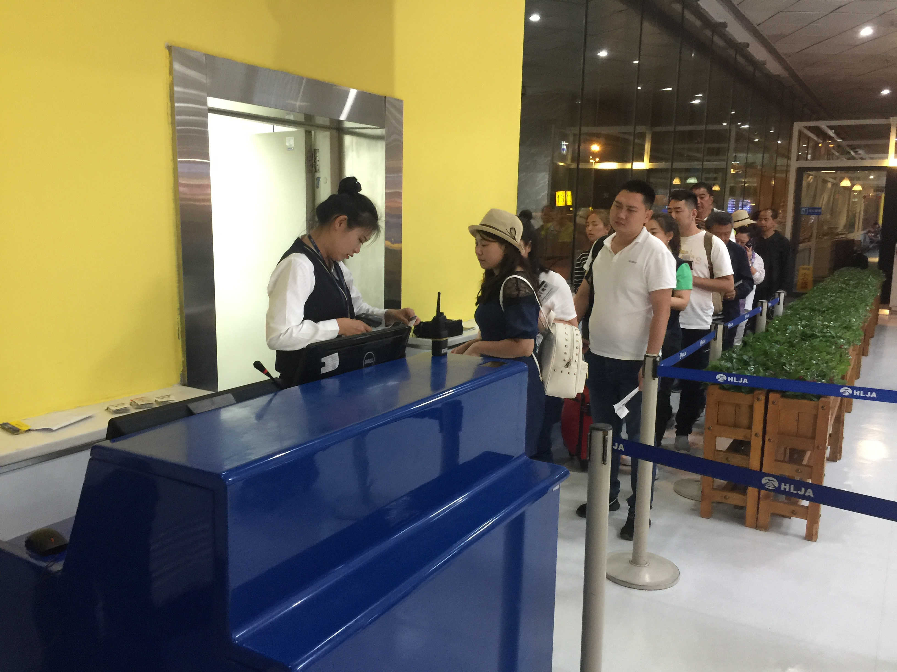
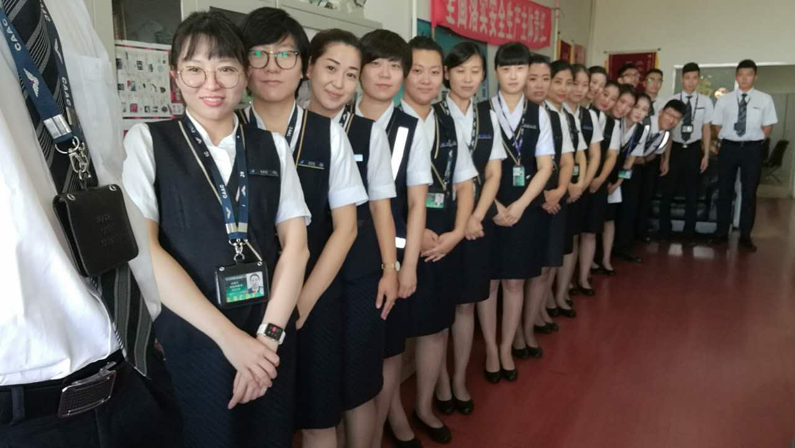
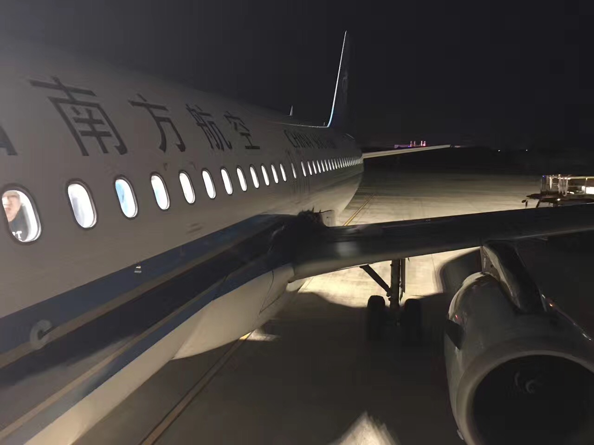
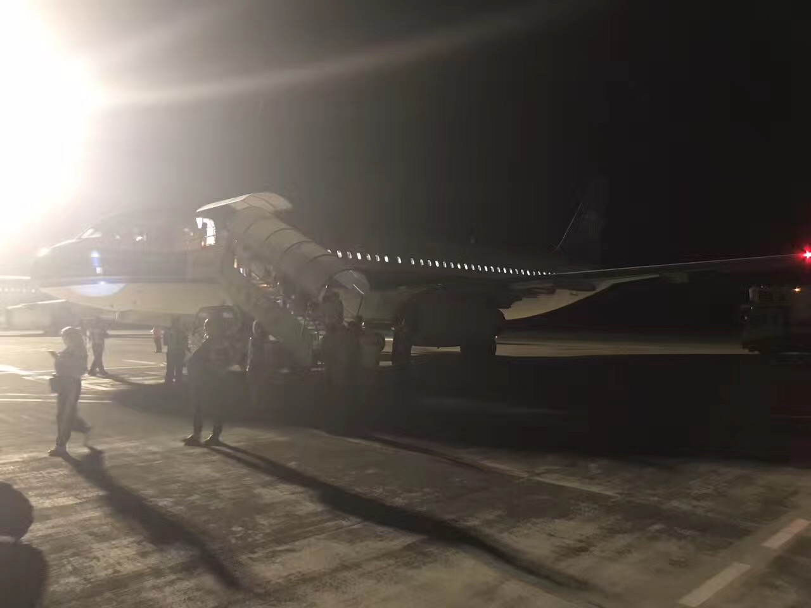

8月初，开始了我在南航地服部为期一年的实习工作，经过一个星期的培训，我被分到了祥云组，祥云组有另外一个好听的名字，叫做七彩祥云。
在祥云，有两位主任和十八位前辈，共有22个人。陌生的同事，陌生的休息室，陌生的工作环境，不同的年龄，不同的性格，不同的为人处事，让我与组里的人与物似乎都产生了距离感，然而这样的距离感，也只短短存在了26个小时。
还记得第一次与师傅的相遇，第一次想要跟她握手，却遭到了尴尬的拒绝，顿时心头一凉，好在扎心的尴尬很快淡出在前辈们的欢声笑语中。我就这样与师傅戏剧的相遇，直到如今都觉得津津乐道。
接下来的日子，便开始了我真正的工作生涯，在师傅无比耐心，无比认真，无比负责的教导下，我开始学习，学习解读舱单，学习安抚旅客，学习安全重于一切。
从最初时的兴奋，纯粹的激情，高昂的期待，为我的工作倾尽所有，然而，却总免不了打击，8月15日，我经历了工作史上的第一次大延误，由于天气原因导致的流控让哈尔滨飞往上海的航班从下午6点延误到了晚上12点30，从最开始安抚旅客到后来安抚自己。6个多小时的等待让旅客从不安变成了焦躁，我也在旅客的谩骂与责备中变得有些慌乱，我跟着师傅一起带着旅客们走出候机楼，去安排旅客乘车去宾馆，然而眼前密密麻麻的旅客却让我变得更加慌乱，本是焦躁的旅客此时已变的暴躁起来，前辈们忙碌着，海宇哥和小美姐调控着，而我却慌乱的站在那里不知所措。
带着旅客回到宾馆办完手续已经凌晨3点，而此时的我也已经满是疲惫，4点钟被大巴车司机的急促的电话声叫醒，仓促的穿上衣服去楼下拨打每一个房间的号码。虽然累，但却很兴奋，第一次觉得自己在做有意义的工作，在为了生活而奋斗。
今天，是我在祥云的第六个工作日，过去的每一个工作日，都让我不断进步，不断与同事们拉进距离，我为能够加入祥云组而快乐知足，为认识各位前辈而暗自窃喜。